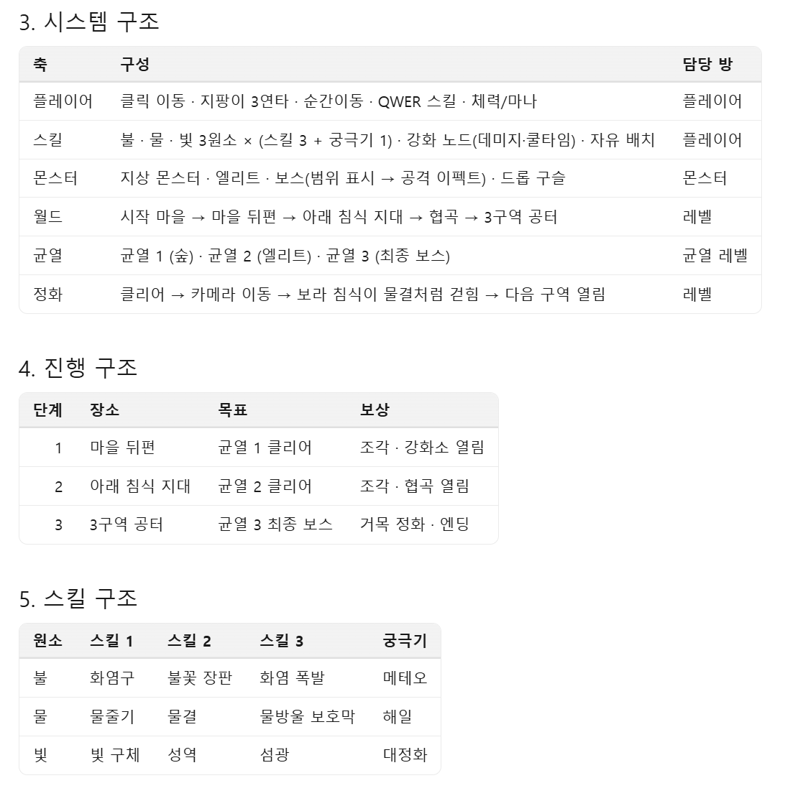
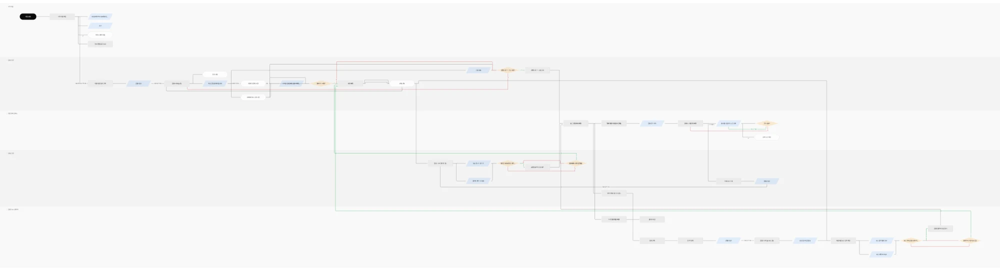
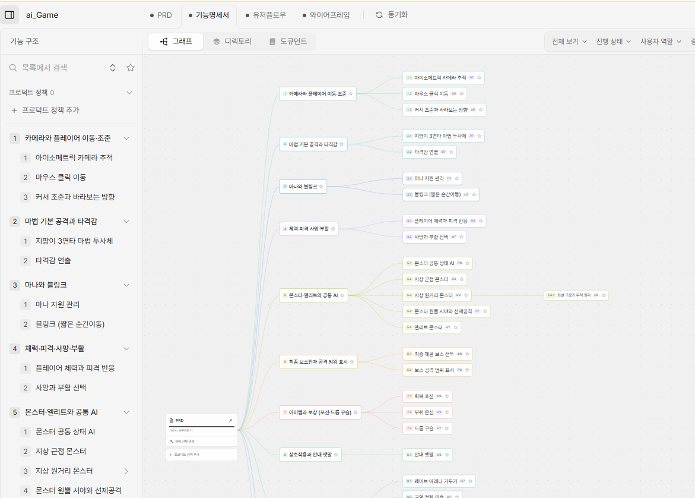
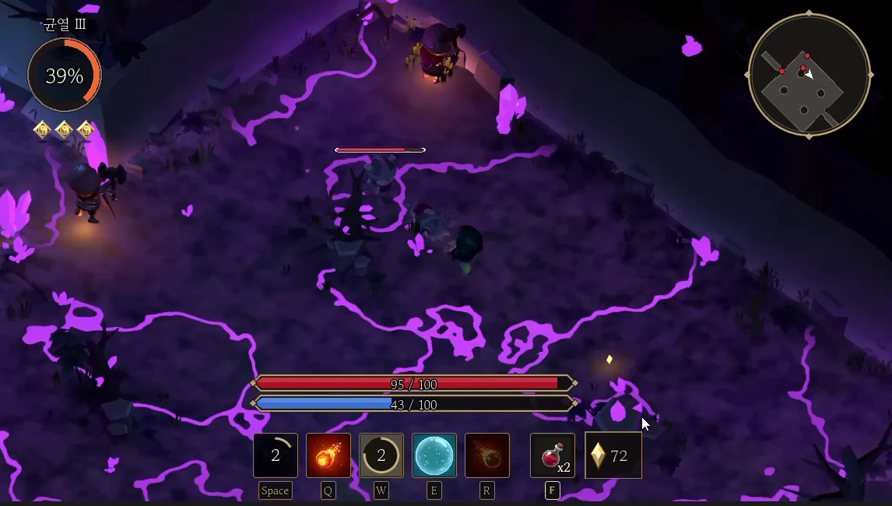
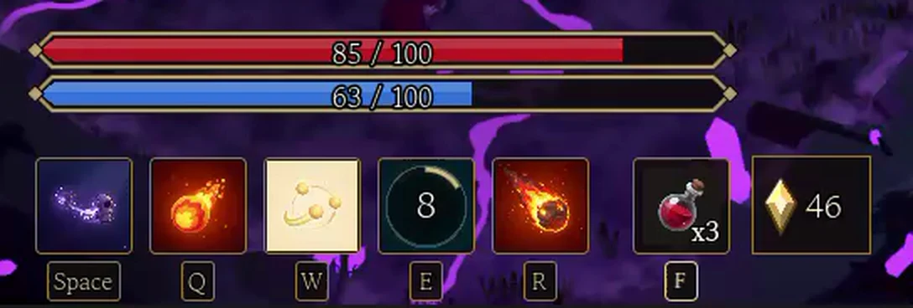
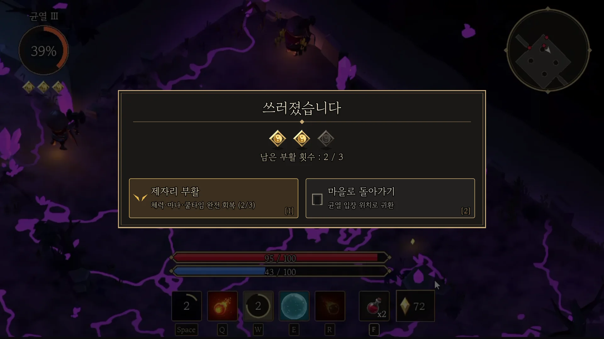

GAMEPLAY
Riftbloom
마우스로 이동하고 QWER 마법으로 싸우는 3D 아이소메트릭 액션입니다. 마을에서 균열 3구역에 들어가 몬스터를 처치하며 레벨을 올리고, 불 · 물 · 빛 원소 스킬을 성장시킵니다.
Godot 4.7원소 마법 : 불 · 물 · 빛개발 기간 : 3일
AI 작업 내역 보기구조화 → Manyfast 설계 → Orca 병렬 구현 → AI 상호 검수 → 대표 검수
3일개발 기간
4개Orca 병렬 작업 방
70건+작업 지시서
- 1구조화 · Markdown대표(기획자)가 아이디어를 md 문서로 직접 구조화 · 핵심 루프, 시스템, 진행, 스킬, 범위를 표로 정리

- 2설계 확정 · Manyfast유저 플로우와 기능 명세서를 Manyfast로 정리해 확정


- 3병렬 구현 · Orca디렉터(Claude Code)가 지시서를 나눠 4개 방이 동시에 작업플레이어 방
- 롤식 레벨업 · 하단 HUD
- 물 스킬 다듬기
- 빛 줄기 스킬
- 순간이동 이펙트 교체
몬스터 방- 무조건 추격 + 길찾기
- 소환표 기반 스포너
- 보스 = 엘리트 강화형
- 균열 1 몬스터 등장 연출
레벨 방- 시작 구역 정화 · 제단 순간이동
- 마을 배치 정리
- 숲 분위기 · 성벽 경계
- 큰 소용돌이 균열
균열 레벨 방- 균열 내부 맵 배치
- 균열 2 엘리트 표시 정리
HUD · 기획 후 AI 작업 방이 구현 (이미지 없이 코드로 그림)

전투 HUD · 균열 게이지·미니맵·HP/MP·스킬 바 
스킬 바 · 쿨타임 표시 
사망 화면 · 제자리 부활 / 마을 귀환 스킬 아이콘 · Gemini로 제작 (프롬프트 직접 작성 → 생성 → 256px 정리)
- 4상호 검수 · 안티그래비티 ↔ 클로드한쪽이 구현하면 다른 쪽이 검토 · Godot 헤드리스 실행으로 에러 0 확인 · 보고서 작성지시서 · next_P-21.md
작업자: 클로드 1. 순간이동 이펙트 - 현상 : 동그란 원 + 선이 보여 어색함 - 기대 : 원·선 제거, 출발 입자 + 실루엣 잔상, 도착 빛 번쩍 + 입자 모임 - 기준 : 원·직선이 안 보임, 0.4초 안에 정리보고서 · report.md1. 순간이동 : 원·선 제거 → 출발 플레어 입자 + 실루엣 잔상(0.3초), 도착 빛 0.2초 2. 아이콘 : 원인 = 잠긴 노드 밝기 0.28, 기호가 글꼴에 없음 → 수정 확인 : 헤드리스 에러 0 작업자 : 안티그래비티 한도 → 클로드
- 5대표 검수직접 플레이(F5)로 확인하고 수정 방향 결정 → 다시 2~4단계 반복
Godot 4.7게임 엔진
Claude Code디렉터 · 담당 방
Antigravity구현 · 상호 검수
Orca병렬 작업
Manyfast유저 플로우 · 기능 명세
Gemini스킬 아이콘 이미지